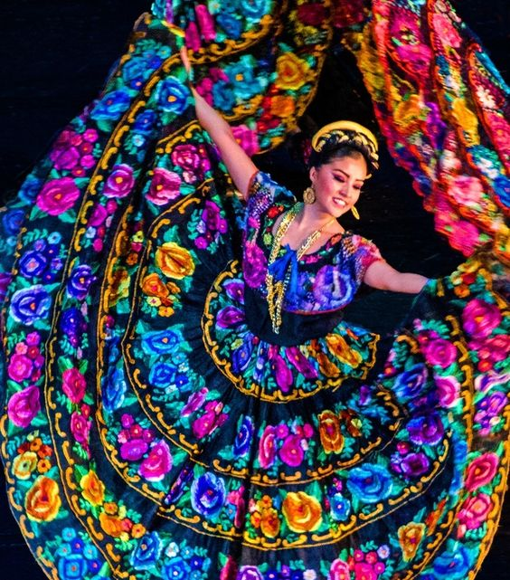

Chiapas de define por ser muy colorido, ya sea, en su vestimenta en su flora y su fauna o en los hermosos paisajes que puedes apreciar de sus pueblitos magicos,existe una gran variedad de sabores en su gastronomia ya que son diferentes los la forma de cosinar en algunos lugares,en Chiapas puedes relajarte en la playa,aventurarte en sus selvas o refrescarte en sus zonas acuaticas o descubrir un poco de su pasado.Asi es mi Chiapas .
